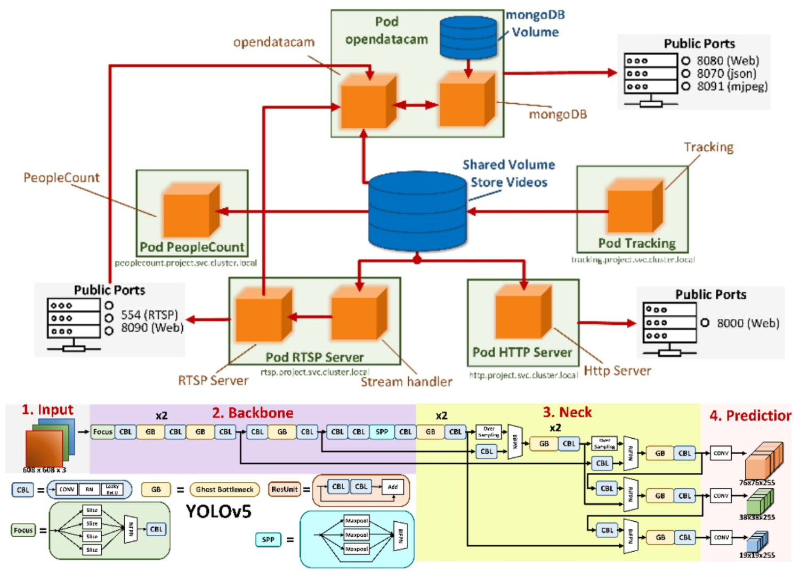
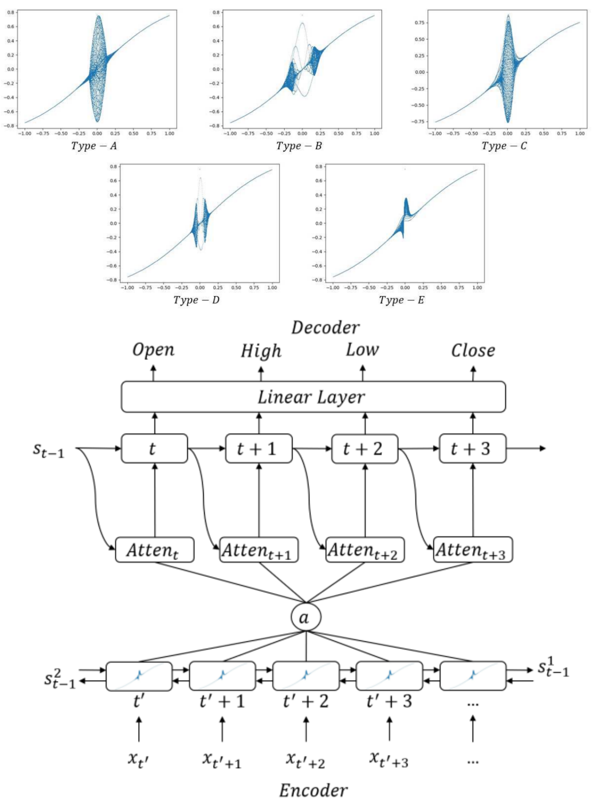
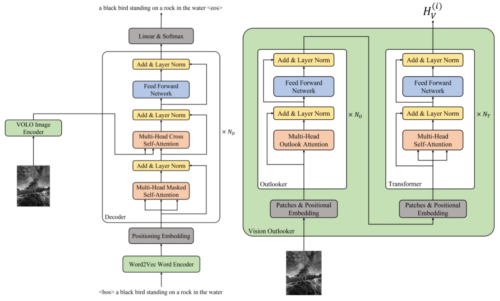
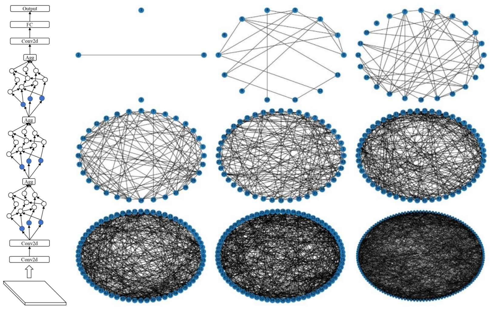
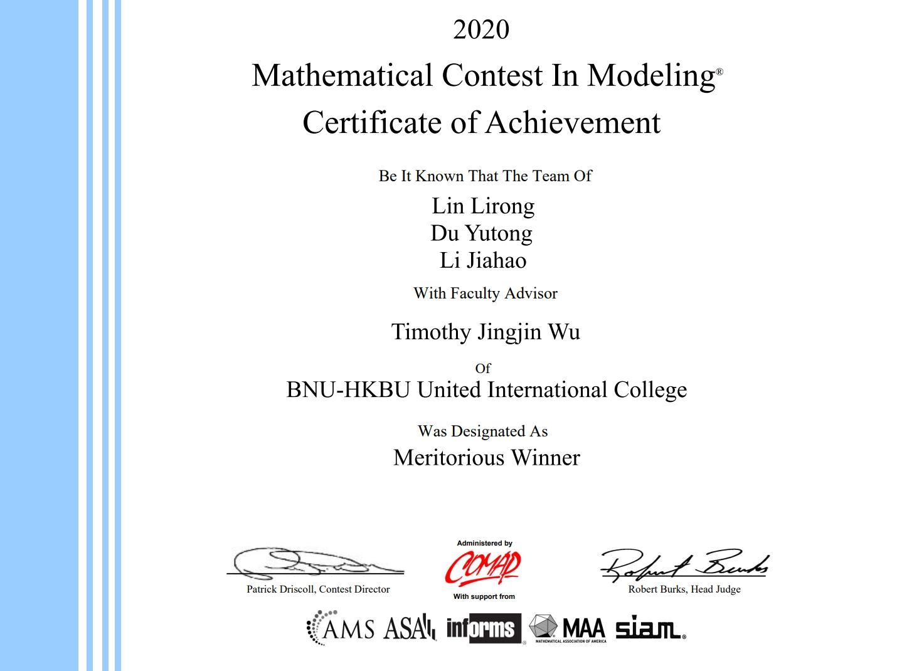
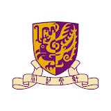
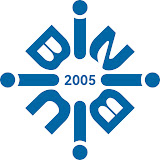
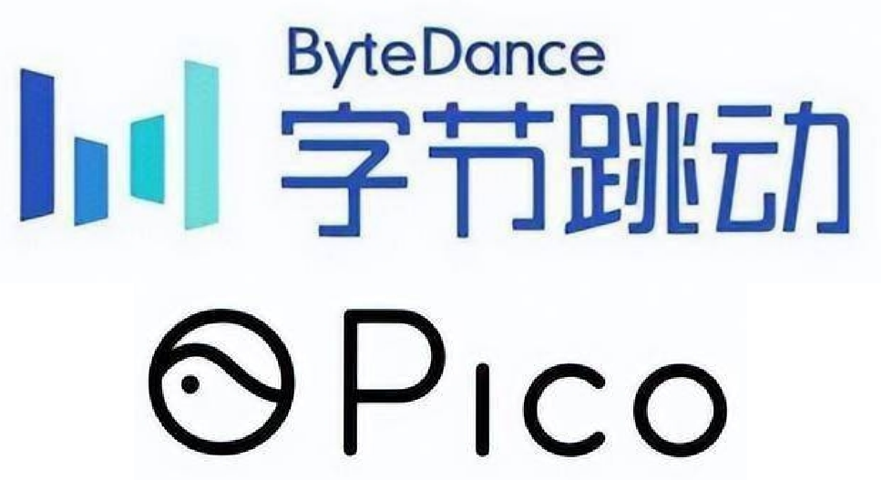

Jiahao LI (Jarvis Lee)Ph.D. StudentCity University of Hong Kong (CityUHK) |
About Me
I am currently a first-year Ph.D. Student at City University of Hong Kong (CityUHK), supervised by Prof. Jianping Wang. My current research direction is Autonomous Driving, especially 3D Occupancy Prediction, 3D Scene Reconstruction (Depth Estimation & Stereo Matching).
Prior to that, I obtained the Master's Degree of Science in Computer Science from The Chinese University of Hong Kong (CUHK) in 2022, supervised by Prof. Kin Hong Wong and the Bachelor's Degree of Science (Honours) in Computer Science and Technology (First Class) from Beijing Normal - Hong Kong Baptist University (BNBU) and Hong Kong Baptist University (HKBU) in 2021, supervised by Prof. Hui Zhang, Prof. Zhiyuan LI and Prof. Raymond Lee. After graduating from CUHK, I also spent a wonderful time from 2022 to 2024, working at the PICO MR Team of ByteDance Ltd. as a Computer Vision Algorithm Engineer focused on Depth Estimation and 3D Reconstruction, mentored by Xiao Liu.
News
- [2025/06] 🚀🚀🚀 One paper is accepted by ICCV 2025! 🚀🚀🚀
- [2024/08] 🎉🎉🎉 I obtained the Ph.D. offer at CityUHK and started my Ph.D. studies! 🎉🎉🎉
- [2024/05] 🔥🔥🔥 Our team (FSM Speed) has won the Championship at the 17th F1TENTH Autonomous Grand Prix during the CPS-IoT Week 2024 in Hong Kong, supervised by Prof. Jianping Wang. The team members include Ph.D. students Jinghuai Deng, Bingyuan Huang, Xiaoyun Dong, Hua Hu, and Jiahao LI. 🔥🔥🔥
Publications

|
Global Regulation and Excitation via Attention Tuning for Stereo Matching Jiahao LI, Xinhong Chen, Zhengmin JIANG, Qian Zhou, Yung-Hui Li, Jianping Wang ICCV 2025 Paper | Code | Cite (All links TBC.) We propose a universal framework (GREAT) for iterative stereo matching, integrating attention mechanisms to capture global geometric context and enhance performance in ill-posed regions. |
Previous Publications
|

|
Application of YOLOv5 for mask detection on IoT Cheng Huang, Yishen Liu, Jiahao LI, Hao Tian, Haoyi Chen Applied and Computational Engineering 2023 Paper | Code | Cite Improved YOLOv5, a lightweight deep learning model to assist people in mask detection, vehicle counting, and target tracking, which does not take up too many computing resources and requires less storage space and is easier to deploy. |
|

|
Chaotic Bi-LSTM and Attention HLCO Predictor Based Quantum Price Level Fuzzy Logic Trading System Jiahao LI, Zihao Huang, Lirong Lin, Yuchen Guo, Raymond Lee Soft Computing 2023 Paper | Code | Cite We propose a neural network-guided price predictor using Attention, BiLSTM, Chaotic Neuro-Oscillator, and Quantum Price Level to forecast HLCO prices and a fuzzy logic-based trading strategy is also introduced to overcome fixed order boundaries and limitations of traditional indicators. |
Projects

|
The 17th F1TENTH Grand Prix (HongKong)
Jinghuai Deng, Bingyuan Huang, Xiaoyun Dong, Hua Hu, Jiahao LI, Jianping Wang CPS-IoT Week 2024 (Championship) Project Page Supervised by Prof. Jianping Wang, our team (FSM Speed) won the championship at the 17th F1TENTH Autonomous Grand Prix during the CPS-IoT Week 2024 in Hong Kong. |

|
Adaptive Error Aware Cost Volume for Stereo Matching Jiahao LI, Zhengxin Li, Yiping Bao, Guangyuan Zhou, Qiang Rao, Xiao Liu ECCV 2024 Submission ID 4123 Code We propose a dynamic sampling strategy based on an error map to accelerate iteration and a noise-filtering cost volume method for improved disparity prediction accuracy in ill-posed regions. |
|

|
Image Caption with Full-Transformer
Jiahao LI, Kin Hong Wong Master Final Thesis in CUHK Code This is a full attention-based Neural Image Captioning architecture with BERT and Vision-Outlooker. |
|

|
Complex Networks and the Applications in Deep Learning
Jiahao LI, Xiangying Wei, Zhiyuan LI Bachelor Final Thesis in BNBU Code A method to investigate the relationship between topology and performance of the deep learning neural network based on random wired neural network model (RandWiredNN) and a training method (Wired-Weight Training). |
|

|
Live Long and Prosper: How Herring and Mackerel Affect Scottish Fisheries
Jiahao LI, Yutong Du, Lirong Lin, Jingjin Wu Mathematical Contest In Modeling 2020 (Meritorious Winner) This thesis investigates the impact of climate change on the migration patterns of herring and mackerel in Scottish fisheries over 50 years. Using linear regression models, the study predicts future sea surface temperatures and identifies optimal habitats for these species. Economic models analyze profit dynamics for small fishing companies, highlighting risks from prolonged transport times and spoilage. |
Education
|
|
City University of Hong Kong (CityUHK)
Ph.D. Student in Computer Science • Sep. 2024 - Present Supervisor: Prof. Jianping Wang Research Direction: Autonomous Driving and 3D Scene Reconstruction |
|

|
The Chinese University of Hong Kong (CUHK)
Master Degree in Computer Science • Sep. 2021 - Nov. 2022 Supervisor: Prof. Kin Hong Wong Research Direction: 2D Object Detection and Image Captioning |
|
|
Hong Kong Baptist University (HKBU)
Bachelor Degree in Computer Science and Technology • Sep. 2017 - Nov. 2021 Supervisor: Prof. Hui Zhang, Prof. Zhiyuan LI and Prof. Raymond Lee Research Direction: Deep Learning, Quantum Finance and Graph Neural Network |
|

|
Beijing Normal - Hong Kong Baptist University (BNBU)
Bachelor Degree in Computer Science and Technology • Sep. 2017 - Nov. 2021 Supervisor: Prof. Hui Zhang, Prof. Zhiyuan LI and Prof. Raymond Lee Research Direction: Deep Learning, Quantum Finance and Graph Neural Network |
Internship and Full-Time Work
|

|
PICO ByteDance Ltd.
Computer Vision Algorithm Engineer in PICO MR Team (Full-Time) • Jun. 2022 - Feb. 2024 Mentor: Xiao Liu Research Direction: 3D Reconstruction, Monocular Depth Estimation, Stereo Matching and Point Cloud Registration |
|
|
3D Print Lab
Research Assistant (Intern) • Jun. 2020 - Aug. 2020 Supervisor: Prof. Hui Zhang Research Direction: Unity Development |